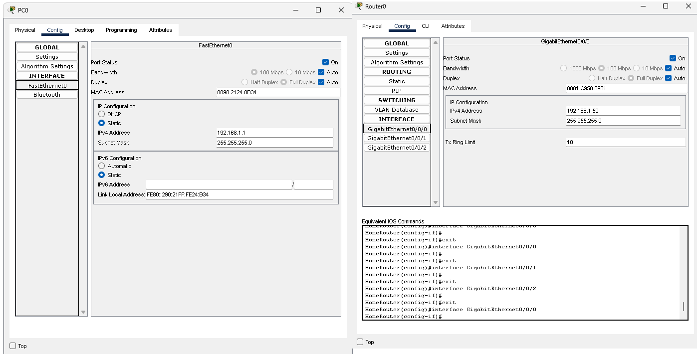
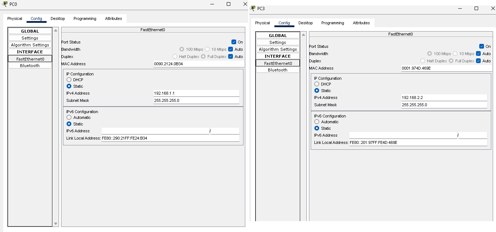
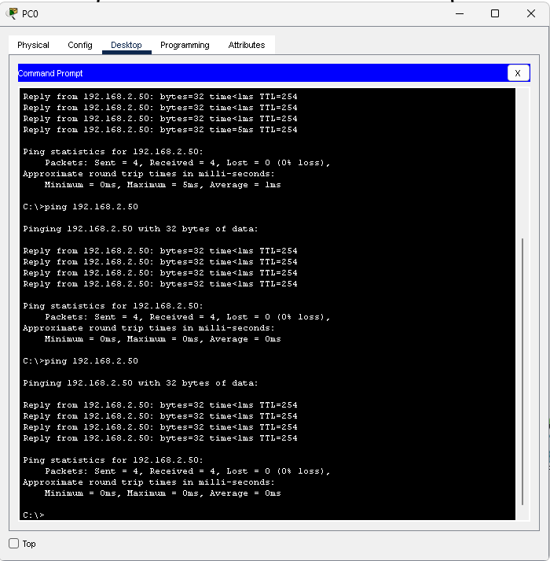
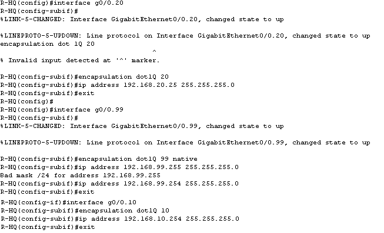
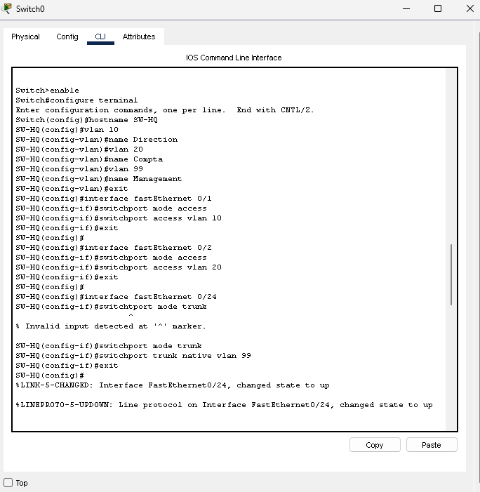
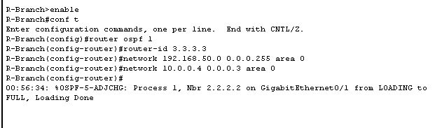
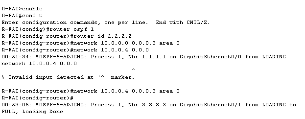
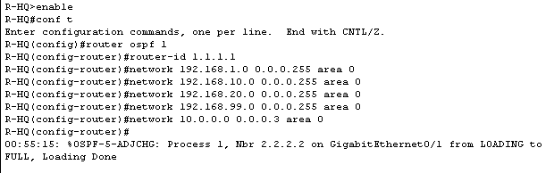
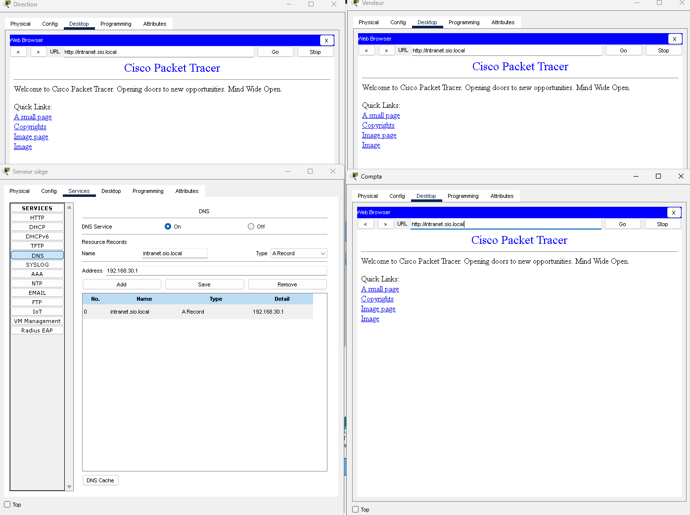

Présentation du projet
Danse le cadre de ma formation en BTS SIO, j'ai pu réaliser au travers de plusieurs TP, plusieurs réseaux suivant différentes architectures et simulant donc différentes topologies et configurations.
L'utilisation de Cisco Packet Tracer m'a permis de créer des réseaux virtuels complexes,
d'ajouter des équipements tels que des routeurs, des commutateurs, et des ordinateurs,
et de configurer les paramètres réseau pour simuler des scénarios réels.
J'ai pu expérimenter avec différentes configurations de réseau, telles que les VLANs, les protocoles de routage, et les services réseau,
afin de comprendre comment les réseaux fonctionnent et comment résoudre les problèmes qui peuvent survenir dans un environnement informatique.
Tous les réseaux présentés dans ce projet ont été créées et configurés par mes soins lors de mon année de BTS via les travaux dirigés et travaux pratiques réalisés lors de ma formation.
De ce fait, plusieurs réseaux ont été créés, configurés et mis en place pour pouvoir simuler différentes topologies et ainsi comprendre différentes notions liées à la gestion d'un parc informatique,
telles que la segmentation de réseau, la gestion d'adresses IP, la configuration de routeurs et de commutateurs, les types d'ACL (Access Control List),
ainsi que l'attribution en fonction des besoins de commutateurs de couche 2 ou 3 ainsi que leur utilité.
Travail Pratique prise en main de Packet Tracer
Réseau simple avec commutateurs, ordinateurs et routeurs.
TP : Prise en main de Packet Tracer
Description : Création et configuration d'un réseau simple avec des équipements de base.
Étape 1 : Création du réseau
Création du réseau simple avec des deux commutateurs, quatre ordinateurs et deux routeurs.

Étape 2 : configuration des équipements
Configuration des commutateurs, ordinateurs et routeurs pour assurer la communication entre les différents appareils. Impliquant donc la configuration d'adresses IP et de passerelles par défaut ( ici l'adresse IP des routeurs correspondants aux interfaces connectées ) pour pouvoir assurer la communication entre les différents appareils du réseau.

Étape 3 : Test de la configuration
Test de la configuration pour s'assurer que tous les équipements communiquent correctement. Ici le test s'effectue entre le PC0 et le PC3, qui sont connectés à des commutateurs différents, eux même connectés à des routeurs différents, ce qui implique que pour que la communication puisse s'effectuer entre les deux PC, il faut que les routeurs soient correctement configurés pour pouvoir faire transiter les données entre les deux réseaux.

Résultat : Le test de communication entre le PC0 et le PC3 est réussi, indiquant que la configuration du réseau est correcte et que les équipements communiquent correctement.

Travail Pratique sur les VLANs et ACLs
Réseau multi-sites, principes ACL, routage OSPF, Services DHCP et DNS.
TP : Installation réseau intranet avec configuration de VLANs et ACLs.
Description : Création et configuration d'un réseau avec serveur DHCP et DNS.
Étape 1 : Création du réseau
Création du réseau avec des deux commutateurs, trois ordinateurs et trois routeurs.

Le réseau est composé de trois routeurs ( Siège, FAI et Succursale ) connectés entre eux, avec des commutateurs connectés à chaque routeur, et des ordinateurs connectés à ces commutateurs. Tous les commutateurs et les routeurs sont configurés pour permettre la communication entre les différents appareils du réseau, pour pouvoir isoler chaque VLAN. Pour l'instant aucune mise en place de protocoles DHCP n'a été effectuée, les adresses IP sont donc configurées manuellement sur chaque appareil du réseau pour pouvoir assurer la communication entre les différents appareils du réseau.

De plus, sur le switch lié au routeur, le port trunk a été configuré sur le VLAN 99 ( initialement VLAN 1 ), pour éviter les attagques par double marquage.

Étape 2 : Routage dynamique
Dans un premier temps chaque routeur a eu une adresse IP configurée sur chaque interface connectée à un autre routeur ou à un commutateur, pour pouvoir assurer la communication entre les différents appareils du réseau. Puis le protocole de routage dynamique OSPF a été configuré sur les trois routeurs du réseau, pour permettre la communication entre les différents réseaux connectés à chaque routeur.



Étape 3 : Installation du serveur et configuration intranet
Avant l'installation du serveur DHCP, il faut pouvoir configurer et préparer la zone serveur. C'est à dire, le switch et le routeur du siège sur la VLAN 30.

 Installation d'un serveur DHCP relié au switch du siège, pour permettre l'attribution automatique d'adresses IP aux appareils connectés à ce switch.
Les services HTTP et DNS ont également été configurés sur le serveur pour permettre l'accès à l'intranet de l'entreprise via un nom de domaine personnalisé ( intranet.sio.local ) au lieu d'une adresse IP.
Cette configuration comprend le fait que le siège de l'entreprise soit le lieu où se trouve le serveur DHCP, qui attribue automatiquement une adresse IP unique à chaque appareil connecté au switch du siège.
Deux pools d'adresses IP ont été configurées sur le serveur. Un première pour les adresses de direction et une deuxième pour les adresses de la comptabilité. Le choix a été fait de ne pas créer de pool pour la succursale
pour pouvoir configurer différemment les adresses IP manuellement et donc vérifier que le PC vendeur communique correctement en renseignant une adresse DNS manuellement.
Installation d'un serveur DHCP relié au switch du siège, pour permettre l'attribution automatique d'adresses IP aux appareils connectés à ce switch.
Les services HTTP et DNS ont également été configurés sur le serveur pour permettre l'accès à l'intranet de l'entreprise via un nom de domaine personnalisé ( intranet.sio.local ) au lieu d'une adresse IP.
Cette configuration comprend le fait que le siège de l'entreprise soit le lieu où se trouve le serveur DHCP, qui attribue automatiquement une adresse IP unique à chaque appareil connecté au switch du siège.
Deux pools d'adresses IP ont été configurées sur le serveur. Un première pour les adresses de direction et une deuxième pour les adresses de la comptabilité. Le choix a été fait de ne pas créer de pool pour la succursale
pour pouvoir configurer différemment les adresses IP manuellement et donc vérifier que le PC vendeur communique correctement en renseignant une adresse DNS manuellement.

Enfin, les ordinateurs des deux sites ont été configurés pour pouvoir communiquer avec le serveur DHCP du siège et surtout pour pouvoir récupérer l'adresse DNS et accéder à l'intranet de l'entreprise.


Résultat : Tous les PC sur les deux sites peuvent accéder à l'intranet de l'entreprise et les pc du siège ont leur adresse IP attribuée automatiquement par le serveur DHCP, tandis que le PC vendeur de la succursale a une adresse IP configurée manuellement.

Étape 4 : Sécurisation et NAT
Pour simuler une connexion à Internet, le routeur FAI a été configuré pour faire du NAT (Network Address Translation) et permettre aux appareils du réseau de communiquer avec l'extérieur. L'adresse IP publique attribuée au routeur FAI pour la simulation de la connexion à Internet est : 8.8.8.8 255.255.255.255

Par la suite, les interfaces internes (LAN) et externes (WAN) du routeur du siège permettant ainsi que les connexions soient définies et sécurisées en conséquence.

Ensuite, une ACL (Access Control Lists) étendue a été configurée sur le routeur du siège pour contrôler l'accès aux ressources du réseau. Ici pour une question de commodité, une seule ACL a été configurée. La règle SECU_COMPTA permettant que la comptabilité ( VLAN 20 ) puisse accéder à l'intranet ou Internet soit accessible mais pas que celle-ci n'ait accès à la direction ( VLAN 10 ).

Résultat : Le PC Compta peut accéder à Internet et l'intranet, mais le ping vers le PC Direction est bloqué, indiquant que l'ACL fonctionne correctement et que les règles de sécurité sont appliquées comme prévu.

Enfin, pour permette d'avoir un meilleur contrôle des ports sur le switch du siège au niveau de la direction. Le port du switch du siège auquel est connecté le PC de la direction a été configuré en port sécurisé, pour permettre uniquement l'accès à ce port à l'adresse MAC du PC de la direction, et ainsi éviter que d'autres appareils puissent se connecter à ce port et potentiellement accéder aux ressources de la direction. Trois politique de Port Security ont donc été configurées. La première n'autorisant qu'une seule adresse MAC à se connecter au port. La seconde enregistrant l'adresse MAC du PC de la direction pour permettre uniquement à ce PC de se connecter au port. Paramètre sticky. La troisième configurant une violation de type shutdown, pour désactiver le port en cas de tentative de connexion d'un appareil non autorisé.